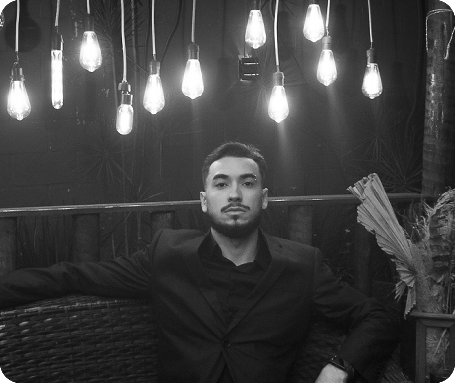
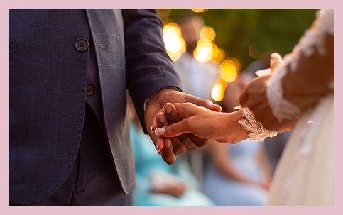
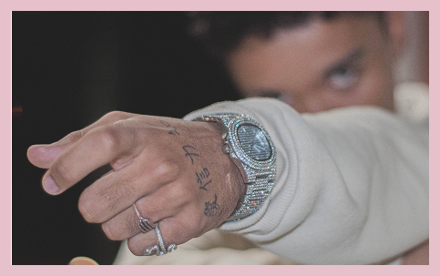
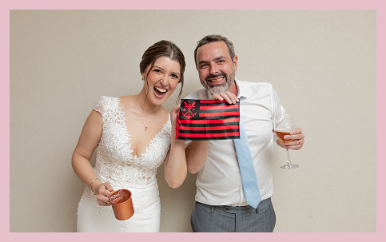

Danilo Lima
Sempre existiu em mim o desejo de levar a
fotografia para um lado mais cinematográfico.
Não
no
sentido de criar cenas, mas de enxergar
cada momento como parte de uma história maior.
Um
casamento
não acontece em fotos isoladas,
ele acontece em sequência, em sentimentos
e em detalhes
que se
conectam.
A inspiração veio do cinema pela forma como
uma imagem carrega significado, atmosfera e
emoção.
Aplicar isso à fotografia de casamento
foi uma escolha natural: observar com atenção,
respeitar o
tempo das coisas e registrar imagens
que façam sentido juntas, não apenas sozinhas.
O resultado é uma fotografia que vai além do
registro. Cada imagem existe para contar algo,
para ser
lembrada como uma cena importante da
história de um casal.
Portifólio

Ter o Danilo como fotógrafo do nosso casamento foi
uma experiência marcada por
profissionalismo,
sensibilidade e atenção aos detalhes. Desde o primeiro
contato, ele demonstrou um olhar
cuidadoso e uma
postura tranquila, o que nos transmitiu segurança em
um dia
naturalmente
intenso.
Durante o casamento, Danilo conseguiu registrar
momentos que passaram despercebidos por
nós,
captando emoções genuínas e gestos sutis
que traduzem exatamente o que vivemos. Ao ver as
fotografias, foi como reviver cada instante com a mesma intensidade.
Seu trabalho vai além do registro: as imagens contam a
nossa história com verdade,
delicadeza e
significado
um resultado que permanecerá como memória por
toda a vida.

Fazer um ensaio fotográfico com o Danilo Lima foi uma
experiência muito mais natural do que
eu
imaginava. Desde
o início, ele conduziu tudo com tranquilidade, atenção e
sensibilidade, criando
um ambiente confortável que fez
toda a diferença no resultado final.
O Danilo tem um olhar apurado para detalhes e momentos
espontâneos, o que torna as imagens
autênticas e cheias
de identidade. O ensaio refletiu exatamente quem eu sou,
sem
excessos ou
poses artificiais.
O resultado final superou expectativas, não apenas pela qualidade técnica, mas pela forma como
as fotos conseguem transmitir sentimento e personalidade.

No dia do nosso casamento, o Danilo foi muito mais
do que o fotógrafo. Ele soube ler o ambiente,
respeitar os momentos e estar presente sem
interferir. Em nenhum momento sentimos a câmera
como
algo que quebrasse o clima pelo contrário,
tudo fluiu com naturalidade.
As fotos revelaram coisas que só percebemos
depois: olhares, risos, emoções silenciosas e
detalhes que passaram rápido demais no dia. Cada
imagem carrega a atmosfera real do casamento,
sem exageros ou encenações.